戒茂斯上嘉明湖出向陽

2024重返世新谷--戒茂斯上嘉明湖出向陽
日期：2024年07月11-14日（四天四夜）
【Before D0】
人生第一次真正意義上的登山就是去爬四天的戒茂斯上嘉明湖，也是蠻瘋的，但當時我下定決心不管怎樣就是要去，可能也是年輕吧，沒有任何恐懼，只有想要把這件事完成好的決心。
老實說我真的很喜歡那時候的狀態——一種有明確目標，且為了目標不斷前進的狀態。
出發前兩個禮拜，我確定為隊伍中的一員後，我便馬不停蹄地做登山的準備。因為這是我的第一次，所以我沒有任何的登山裝備。這兩個禮拜，我一邊爬文做功課，一邊逛迪卡儂買登山裝備，一邊跑步練體能，很累但也很充實、滿足。
我買衣服還特地搭了一下顏色，雖然不知道看不看的出來。因為我很喜歡藏青色，所以買了藏青色的羊毛混仿上衣。不過後來覺得那件上衣可以再買大一號，有點太貼身了，我喜歡寬鬆一點的。然後我真的很喜歡這件外套的顏色。這件是男款，迪卡儂的女款是絕對不會出這種顏色。我當時一看到這件顏色，我就決定是它了 。或許是因為我想到了我爸（好啦我的確想到我爸），我爸也有一件差不多的外套。
背包的話，一如既往是黑色，畢竟黑色白搭。雖然大家都說迪卡儂的很爛，但我還是背著它走完了這四天的行程。
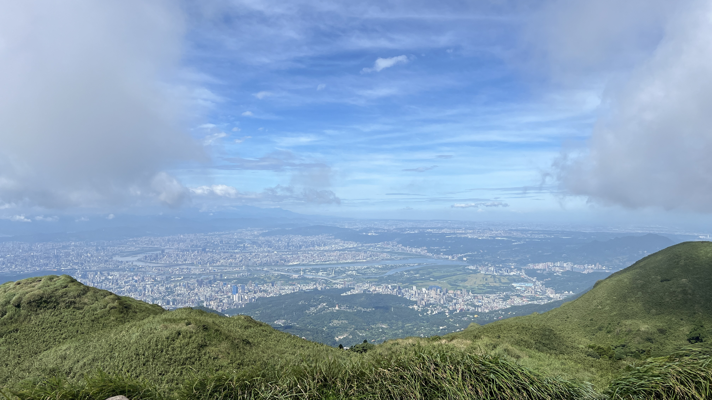
那時候為了練體能，我還跑去一個人爬七星山。那天超熱的，太陽超大，三角點的地方風超大，但展望不錯，不愧是台北第一高峰。
還記得那時候我在旅客中心跟一位阿姨的對話。阿姨看我自己一個女生，就跟我聊天。我說我是自己一個人騎車來爬山，阿姨誇我很厲害笑死。謝謝阿姨。阿姨還說我這樣運動後臉蛋紅通通的很可愛，哎呦阿姨這樣講我會害羞啦齁。
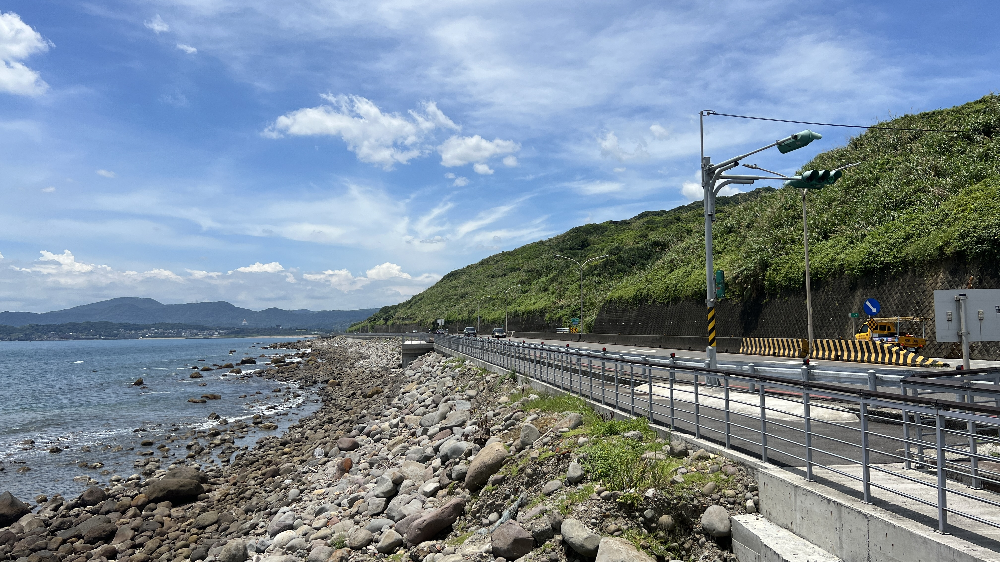
爬完山甚至還有力氣跑一下北海岸，在某間海邊咖啡廳吃了個超難吃的鬆餅，看天色不對，趕在下雨前回家洗澡睡覺。
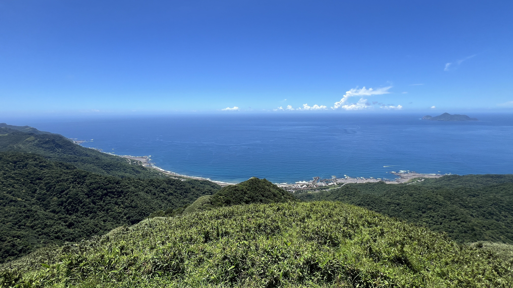
過沒幾天跟朋友去走草嶺古道，順便跟我新買的登山鞋磨合一下，不得不說新鞋真的很磨腳。那天天氣超熱，兩個人都走到快中暑。

那時候的跑步紀錄。我還記得07月02日那天，我覺得自己狀態超好，感覺整個身體很輕，一起步就跑超快。頭一公里的配速是5’25”，第二公里也維持在5’33”，不過第三公里就開始累了，時間慢慢遞增。
老實說最後一公里，我真的好幾次覺得要堅持不住了。但我不斷跟自己說，沒關係，跑慢一點沒關係。你可以慢，但不能停。可以慢，但不能停⋯⋯因為今天的目標是跑五公里，所就這樣一直堅持到跑完，最後也成功跑進30分鐘 。
結果我跑完之後大爆哭。一種將自己的身體ㄍㄧㄥ到極限後，積壓已久的情緒才能順著身體的痛苦發洩出來的狀態。我一邊走一邊哭，我放聲大哭，肆意地宣洩著一直以來的情緒和痛苦。我哭了好久好久⋯⋯直到我走出去一公里多，我才慢慢地平靜下來，慢慢地走回起步的地方。
不得不說，大哭一場之後，爽多了。不然我平常都哭不出來。還好現在發現了新方法，下次只要心情不好就去跑5公里30分鐘。反正我現在知道，透過身體的痛苦可以讓情緒被發洩出來。
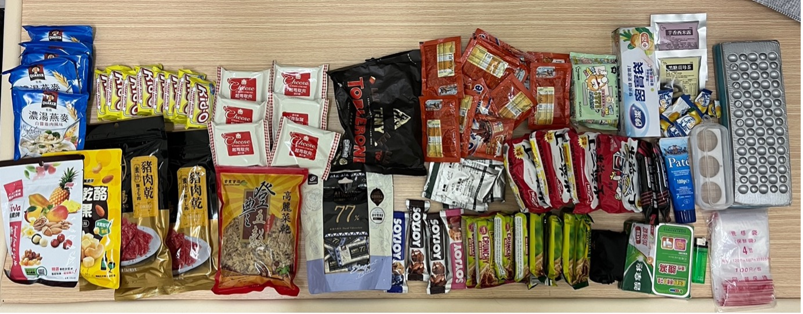
那時候爬文說登山消耗很大，我很怕自己餓到買了超多行動糧，超好笑，真的超多。我還有算一天的熱量，按照計劃的全吃完可以吃到三千大卡左右。結果我實際根本吃不了那麼多，而且稍不合我口味的我都沒有吃多少。所以登山很重要的一件事是，所有帶上山的食物都必須要在平地的時候吃過。那個咖啡因能量棒真的超難吃，那個鮪魚醬很白痴，又貴又佔重量，倒不如多帶一點肉乾。
【D1】
05:07 人員搭乘接駁出發（一大一小車）。
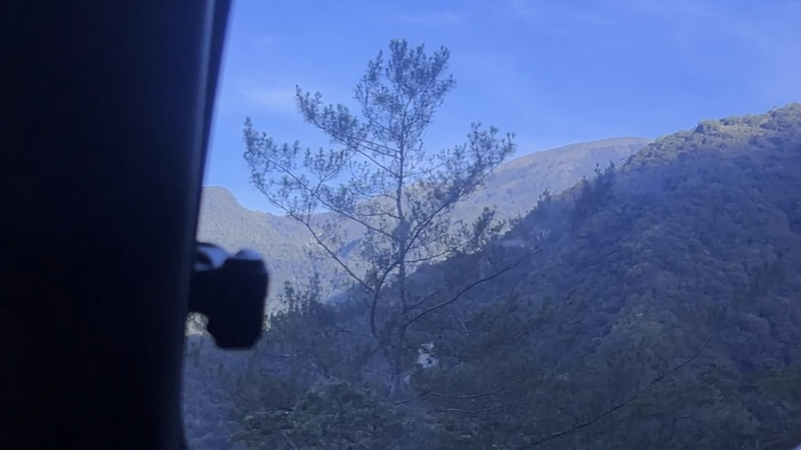
搖搖晃晃地坐了一個多小時的接駁車，大家都睡著了，只有我興奮得完全睡不著。
06:34 到戒茂斯登山口。下車後呼吸到海拔一千九的空氣——很爽，涼涼的很舒服。
06:40 進山儀式
06:42 起登，開始陡上。走沒多久就熱到要脫外套了。
07:08 抵達戒茂斯前鋒，小休5分。
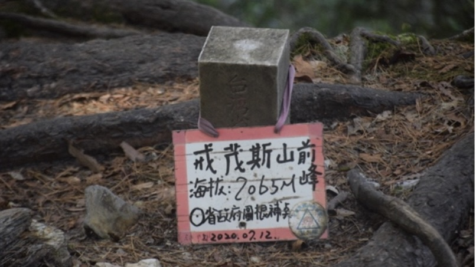
07:27 遇崩壁展望。
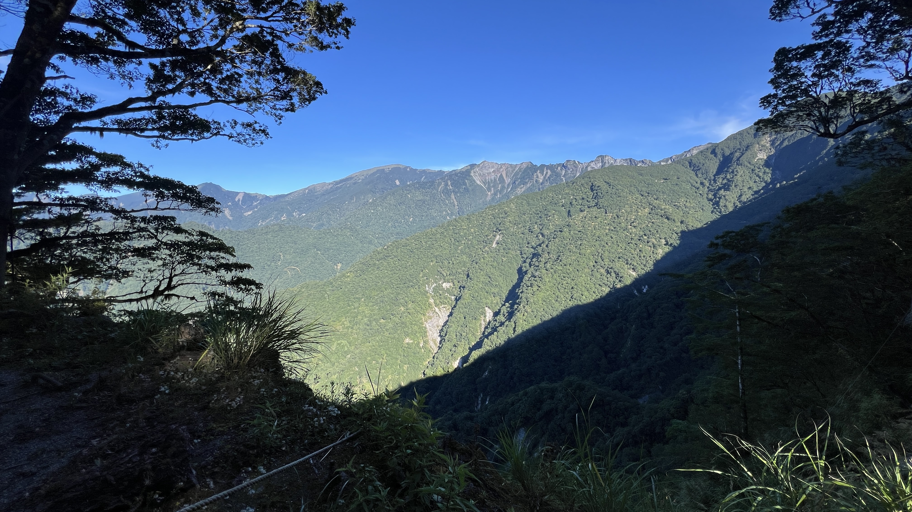
展望很美，記得下面崩壁好像有看到山羌。想當年我還不知道山羌是什麼。
07:30 我看起來蠻自在的

08:04 稜上小休
08:05 續行
08:50 到戒茂斯山岔路
09:01 到戒茂斯山（中間有小休，單趟僅需4分鐘），山頭很鳥，無展望，有風很涼

那時候在戒茂斯山岔路，大家可以自由選擇要不要輕裝往返戒茂斯山。我想說來都來了，還有體力，而且往返也才十五分鐘，所以就跟其他人一起去戒茂斯山三角點打個卡。雖然的確沒什麼展望啦，但就是一個「來都來了」的心態。
09:13 3人小分隊回到岔路口

回到岔路口發現所有人都躺在地上了笑死。我當然也要一起躺一下，結果又是快睡著的時候準備出發。躺在地上往天空上看，被樹林包裹著的感覺真好。
10:11到新武呂溪。陽光穿過樹葉照在溪裏的畫面真的超美。

10:19 抵新武呂溪營地，人員士氣高昂。小休吃午餐

其實走到這裏的時候，我的腳後跟快磨出水泡，但因為經歷過馬丁靴的摧殘，所以我當時沒有覺得怎麼樣。我只有跟隊友要來OK繃貼一下，雖然OK繃貼了也沒什麼用，腳後跟還是繼續磨，水泡還是繼續長。
後面三天我都帶著水泡走完，當時有在痛，但現在回想會覺得還好，那四天的快樂回憶蓋過這個痛楚，沒有特別去回憶的話，我甚至會忘記水泡這件事。
11:15 休息結束，隊伍續行

11:59 陡上前小休。學長手機不見，體力好的人回去幫忙找，剩餘隊員小休

他們回去找手機的時候，剩下的人在這片林蔭地大睡了一波，睡了好久好久。不得不說還好有睡一下恢復體力，不然真的不知道後面的陡上要怎麼上去。
13:13 有人手機不見，回新武呂溪營地找到，手機掉溪裡，重新整隊出發
14:01 小休
15:10 全隊到排球場營地

15:34 全員到足球場營地

16:10 全隊到高爾夫球場營地。

正在搭建營地的大家，以及高爾夫球場營地的夜空。
雖然我昨天整宿沒睡好，但今夜的我還是入睡困難。我記得我很早就進帳篷睡，但睡沒多久又醒來了。醒來之後大家都睡了，但我卻睡不回去，所以離開帳篷透透氣。營地裏的大家都睡了，周圍的一切都很安靜，待在這裏讓人感到平靜。
短暫地的平靜過後，我重新回到帳篷嘗試入睡。
【D2】
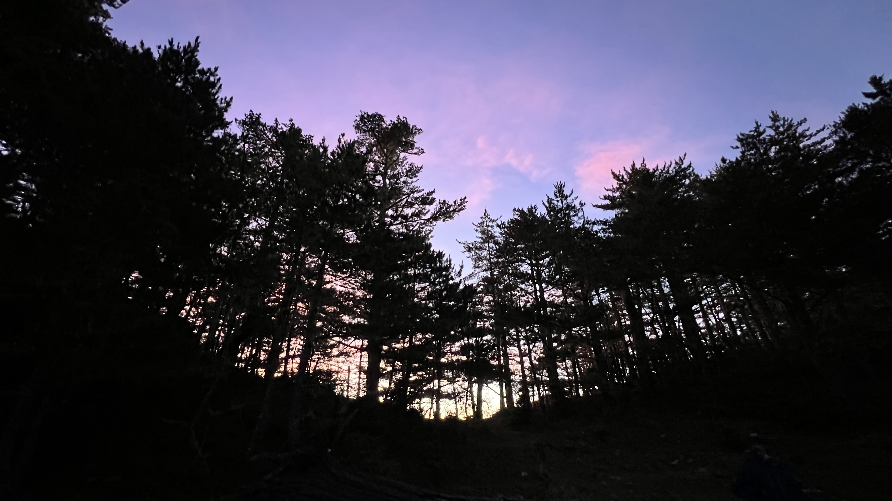
淺眠的我依然沒能等到鬧鐘響起，便醒來了。
醒來時天還矇矇亮，晨曦透進零層，穿過樹林的間隙，照進這片營地。天空是一個巨大的調色盤，混合著曙光的淡黃和黑夜的深藍，交織出夢幻般的粉色。在這夢幻般的場景下，塵世間的一切似乎都不再重要。
05:10 高爾夫球場出發

05:55 小平台小休5分鐘
06:09 展望

非常美的展望，以及很美的一顆樹。我每次看到照片都覺得照片沒有辦法完全表達出現實的美，有些東西真的需要且值得用雙眼來紀錄。
06:12 出發續行
06:45 全隊到嘉明湖妹池，訊號滿格，有溪谷也有高山，草原風景很好看

07:17 到溪底獵寮營地，有訊號和活溪水，在此取行動水，順便曬太陽加熱一下

07:50 出發續行
08:01 陡上兩百

09:06 陡上結束
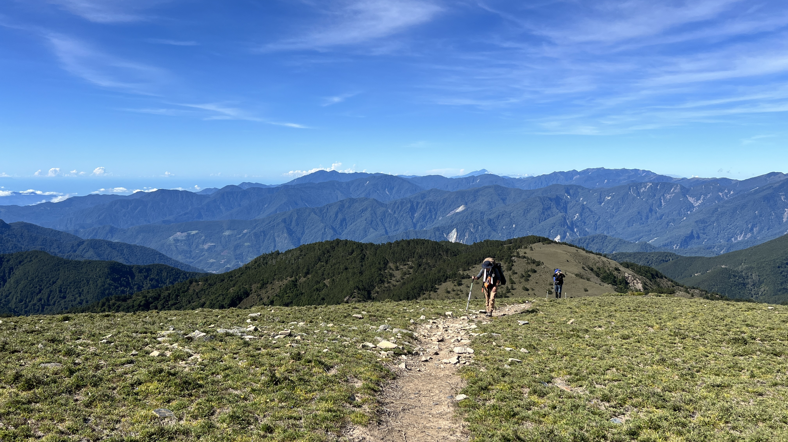
那段陡上超累的，真的是很陡的陡上，我快累死了。陡上後回望剛剛陡上的路，嗯，我走過來了。
09:17 全隊到嘉明湖

人生中撿的第一個高山湖泊——嘉明湖（沒記錯的話。有記憶以來我好像也沒去過什麼高山，除了小時候跟家人一起去的武嶺農場）嘉明湖蠻美的，湖水的顏色也很好看。

那時候跟隊友開玩笑說要下去繞著嘉明湖跑圈，結果才下三米就發現有點累、有點陡、還有點遠。
嘉明湖雖然看著很近，但實際走下去才發現超遠的。這個草坡看起來沒有很陡，但下去容易上來難，往上爬的時候發現超累，所以我們沒走多久就放棄了笑死。畢竟後面還有很長的路要走，還是先不要在這裏耗太多體力，免得等等爆掉。

合照，我笑得太開心了吧；登山杖三腳架，好聰明喔；無意中拍到的學長，我超喜歡這張照片，有那種人在大自然面前渺小的感覺。
10:43 到嘉明湖叉整裝出發

11:44 小休

第二天我的狀態還是很好，那個舉起雙手看起來充滿活力的人就是我.
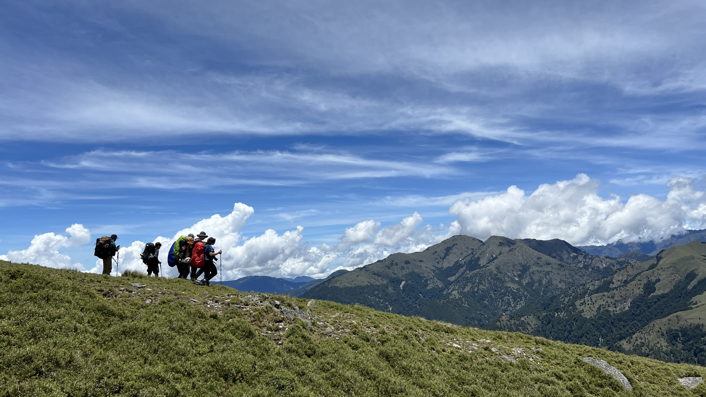
我也很喜歡這張照片——稜線上的人。
13:40 到拉庫音溪山屋

在到達拉庫音溪山屋前還要再渡最後的一次溪，如左圖，拉繩走到對岸。
然而當我拉著繩子，快要走到岸上時，我卻腳一滑半個人栽進水裏。本來想說我可以不濕地渡溪，結果沒想到臨門一腳滑進了水裏。
順帶一提，即使是夏天，但水還是超冰的，無法想像冬天會有多可怕。

到拉庫音溪山屋後，因為時間還很早，所以我跟另外一位女生一起在溪邊玩耍。那是一段很美好的時光。
斑駁的林蔭，潺潺流水，我們兩個人在溪邊戲水，在無人的森林中放聲大笑。我們脫掉鞋子，感受著溪水的冰涼。我們赤腳坐在溪中間的石頭上，一邊感受著太陽的溫暖，一邊體驗著溪水的冰涼。我會永遠記得這段美好的時光，這個電影般的午後，這束溫暖的陽光。
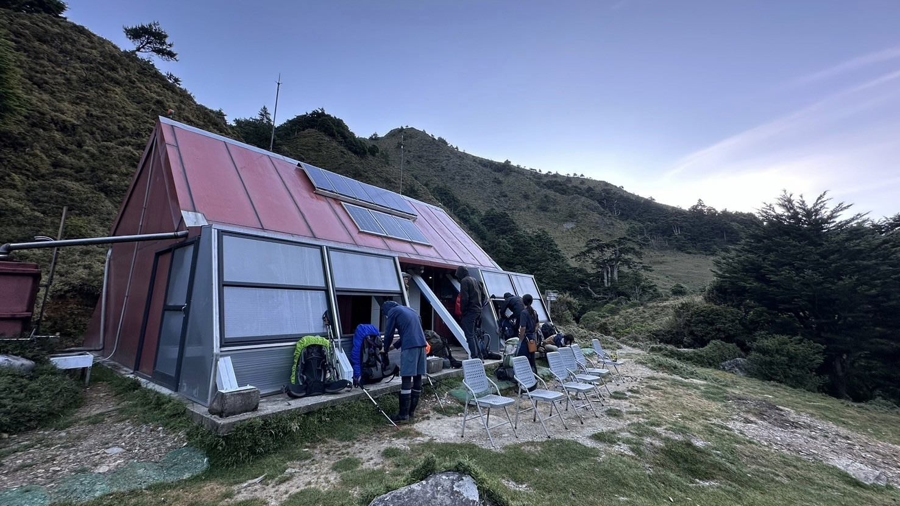
後來，我們回到山屋，在山屋前的空地冥想。
我閉上眼睛，靜靜地感受這座山，感受在這座山裏面的自己，感受拂過臉頰的風，感受沙沙作響的樹葉。當我靜下來時，我身體的感官放大，我可以明顯地感受到自己的呼吸，甚至連遠處的鳥嗚都變得清晰。正當我沉浸這個狀態裏面時，我聽到他們回來的聲音。雖然冥想被迫中斷，但那種美好的感覺會永遠留在我的心中。
在下山後的很長一段時間，每每閉上眼，我都彷彿回到了那個午後，一切都歷歷在目。
【D3】
這四天的早餐，我自己是安排了沖泡燕麥跟阿華田，還有咖啡。因為在本來有喝咖啡的習慣，所以我有把咖啡帶上山。
今天早上泡阿華田的時候一樣加了一點凍乾咖啡，但不知道是不是因為手滑加太多的關係，這阿華田喝起來超級苦，苦到我懷疑人生，甚至懷疑我為什麼要帶咖啡上來。
我後來發現咖啡只有在山下那種很Chill很舒服的生活才會好喝，在山上那麼累的情況我只會想喝甜的，完全不想再吃苦。
05:49 全隊離開山屋
06:18 上切遇斷頭稜，全隊回頭

我記得這段路我臉超臭的，因為一大早陡上對我來說超級累，然後好不容易上去之後又跟我們說要原路折返。
通常下山的感覺會比上山還陡，然後大家都走超快，我就在山坡上想說大家到底是怎麼下去的，而且沿路有一堆低矮長滿刺的灌木叢，走到超級生無可戀。
06:46 切回拉庫音溪底，有路底，好走

07:00 過一次小溪，水到膝蓋
（中間過數次小溪，水不大）
中間一直在渡溪，但其實我沒什麼印象了，反正我的腳跟鞋子一直都是濕的，但只要不停下來，我都可以忘記痛楚。
07:43 瀑布與深潭

08:23 到世新谷

到世新谷的那一瞬間，心情很好，天氣也很好，看著眼前的大草原，好想要在草原上奔跑大叫喔。
08:44 3人小分隊去看大鵬飛機殘骸

因為還有體力，再加上想說來都來了，所以就打算還是去看一下大鵬飛機殘骸。
當我想要拿我的攻頂包來裝東西的時候才發現它不見了，是真的找不到。我翻遍了整個背包都沒有找到它，我想它大概率是掉在剛剛的溪裏了。我當下其實有點不爽，但這個不爽不是對別人，是對自己的。因為覺得自己沒有把它東西收好所以導致它掉在路上，而且因為它是新買，第一次用就不見就覺得「啊好不爽喔」。但也沒辦法，眼見其他人要出發，我只好先作罷，簡單帶了水跟一點行動糧，還有登山杖就一起出發，尋找大鵬飛機殘骸。
出發了才發現，為什麼只有我穿拖鞋，還沒有穿襪子，大家穿登山鞋不揪。
到世新谷一聽到要大休就換上拖鞋了，結果發現只有我在穿拖鞋走這段路，而且還不好走。他們說來回只要二十分鐘，來回確實沒有沒久，只是路沒有很好走。不過在看到飛機殘骸之後還是覺得蠻開心的，而且一下子就忘記攻頂包不見的事笑死——金魚腦的好處。
題外話，我覺得我對「屬於自己的東西」有一種執著。我不喜歡借用別人的東西，因為我不喜歡別人借用我的東西。我喜歡我使用的東西是屬於我自己的。我不喜歡「屬於我的東西」會離開我，會離開我的話，那就不是屬於我的東西了。所以我不喜歡東西不見，不管大小。我單純地不喜歡「我的東西」離開我，所以我每次不見東西都會很難過，當然最後還是會走出來，但還是免不了難過一陣子。但如果那個東西是我主動拋棄的話那就另當別論了。
09:08 3人小分隊返程

回程路上的風景
09:29 合照

09:50 續行，往清華谷出發
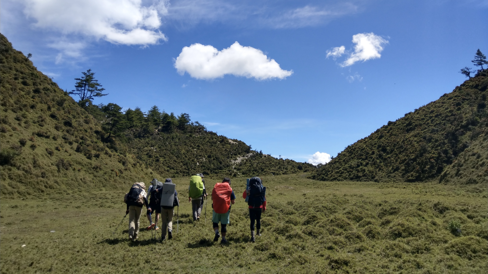
要離開這片美麗的草原了，天氣真的很好
10:14 遇些許有刺植物，很痛，緩上沿稜線走，路跡基本明顯，沿路皆曝曬少遮蔽

左圖是上切離開世新谷的我們，那一段也是蠻累；右圖是在崩壁旁行走的我們。那個崩壁也是蠻壯觀的。
10:17 小休

這是最後的美好時光，因為沒記錯的話這段小休完之後就一直在鑽有刺的灌木叢，真的有在痛。
12:20 後沿乾溪溝轉稜上，下至清華谷，沿途一堆有刺植物，很痛，午餐1小時

左圖是在下切的大家，一樣有很多刺刺的植物，而且雖然看著不陡，但實際走起來有點小陡。右圖是我們終於下到清華谷了！

在山坡上拍的清華谷全貌
大家在清華谷休息吃午餐。隊友跟我分享了一口蛋黃酥，我才發現在山上吃這些超高熱量的傳統點心也太爽了吧。只能說這些點心必需進入我的登山菜單裏面。
同時也是在清華谷的時候，我發現我剩下的一顆蛋破了，因為我是用蛋盒，然後可能因為今天的路比較顛簸，所以蛋在行進過程中碎了，蛋液流滿整個盒子，但還好沒有流出來佔到其他裝備。
13:15 隊伍續行

今天的路程我完全是一片空白，我完全沒有印象從清華谷離開之後走的路。我只記得我們一直沿著溪走，然後就沒印象了。
13:57 下切至峽谷，遇一地形需攀岩過，手點很大

下切峽谷這一段我也沒有印象。
14:08 渡溪

渡溪這一段有一點點印象，印象中這溪比較深，為了不濕鞋，所以我們都有脫鞋，還有就是溪水很冰。
應該是渡溪前，有一小段路要抱石過去，其實渡溪也可以，只是因為水比較深，所以大家選擇抱石過去。學長因為穿雨鞋的關係所以直接渡溪過去，其他人抱石。
那一段抱石其實沒有很難（以現在來看），但當時我抱到一半的時候，學長在我後面幫我把背包托起來，學長原意是想要幫我減輕負擔，但我被這一瞬間的減負嚇到，我還以為我要掉下去了。不知道怎麼形容，就是雖然重量變輕了但多了一個往後的力(?)害我以為我要掉下去了。然後我拼命跟學長說沒關係讓我自己來就好，真的快嚇爛。
渡溪完之後要抱石上去，因為是內傾岩壁所以其實沒有很難，只要有抓穩就上去了。
照片上是我們渡完溪在穿鞋，我們後面就是等等要抱石上的位置。抱石前先把登山杖收回包包，然後把包包打包好。我記得我抱石的時候沒有帶帽子，因為我覺得帽子有點阻礙視線。
14:30 全隊上切至大草原
15:00 下至溪谷取最後水源
15:23 溪谷

這溪谷也是很漂亮，以至於我很一段時間以為山都長這樣。
15:38 草原

16:10 到飛機殘骸大草原紮營

我那時候對營地建設沒什麼概念，一切聽從領隊的安排。
時間差不多大家就開始煮自己的晚餐，雖然我今天沒蛋，但我吃到了很多大家的食物笑死。
隊友今天吃沖泡的白飯配肉鬆，她給我嚐了一口，我才發現原來白飯配肉鬆可以那麼好吃。白飯配肉鬆絕對會出現我之後的登山菜單裏面。
夜幕降臨，大家開始喝酒聊天。

酒過三巡，酒勁開始上來，我有點小茫，一邊喝著茶，一邊看著星空發呆。我那時候完全沉浸在自己的世界裏，眼裏只有滿天繁星，耳邊只剩下風吹過樹葉的聲音，彷彿周圍的一切都跟我無關，只剩下我跟這座山。那時候唯一的想法有且只有「我在這裏，好開心」。
【D4】
又來到早餐的部分，今天一如既往在吃沖泡燕麥。因為我本來就會吃燕麥，所以吃燕麥對我來說不是什麼特別的飲食習慣。
前幾天吃都沒什麼問題，然而今天早上當我在燒水準備泡燕麥的時候，隊友跟我借了點水。我一開始沒意識到什麼問題，當我看到鍋裏那份超級濃稠的燕麥之後我才意識到大事不妙。這種狀態的燕麥超難吃的，以至於我下山後沒有再吃過那個沖泡燕麥。
05:50 出發，沿路可見飛機殘骸

07:28 小休
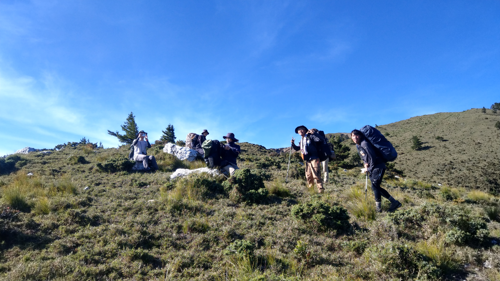
記得這段上坡走到懷疑人生，我好像也是走在隊伍偏後的位置，然後想說為什麼大家走得那麼快。
看著很近，但實際走起來會覺得為什麼一直走都走不完。還有就是大拇指跟腳後跟都磨得很痛，我記得我有跟隊友要OK繃，但那時候OK繃已經用完了。其實也沒關係，因為OK繃作用不大，只是貼一個心理安慰。
07:49 上坡到草地平台，小休後沿稜續行
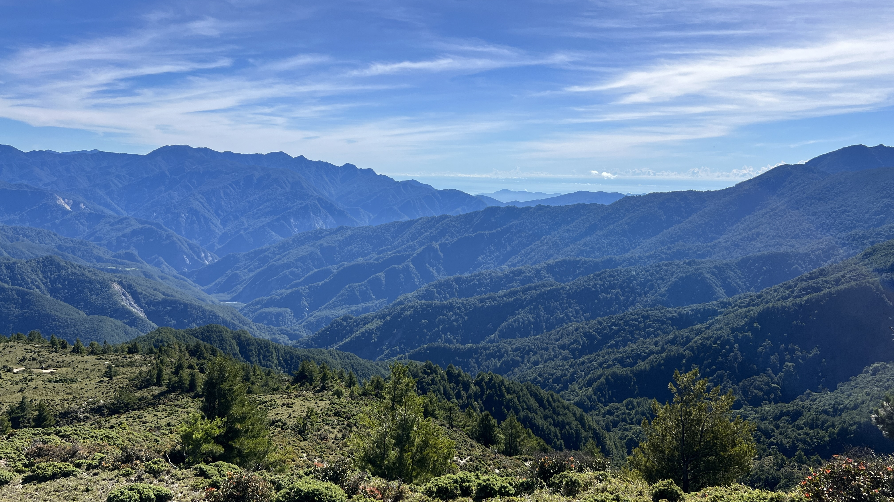
08:00 白石陣旁一凹洞內發現四挺機槍
09:18 一路沿草坡和稜上，到布新營地岔路休息
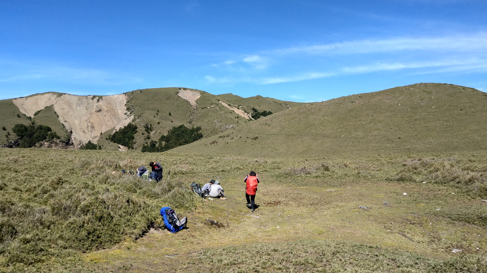
還記得這段休息的時候，我有點沒有很想要休息，因為對我來說休息會比繼續走更累。
主要是因為當時已經有水泡了，一直維持在行進的狀態時，我可以忘記或者說習慣水泡的疼痛；但如果停下來休息再重新出發，那麼我就必須要重新習慣水泡的疼痛，這個重新習慣的過程會更比一直的疼痛來得更痛，縱使兩種疼痛可能是一樣的。
所以這是我不想要停下來的原因，因為停下來就會痛。
09:32 出發續行，接回傳統路
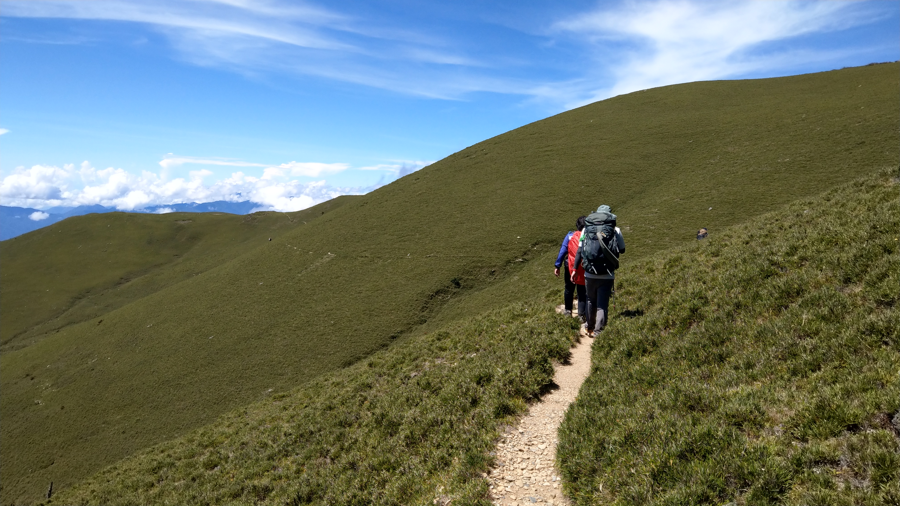
10:39 全隊到嘉明湖-三叉山岔路口
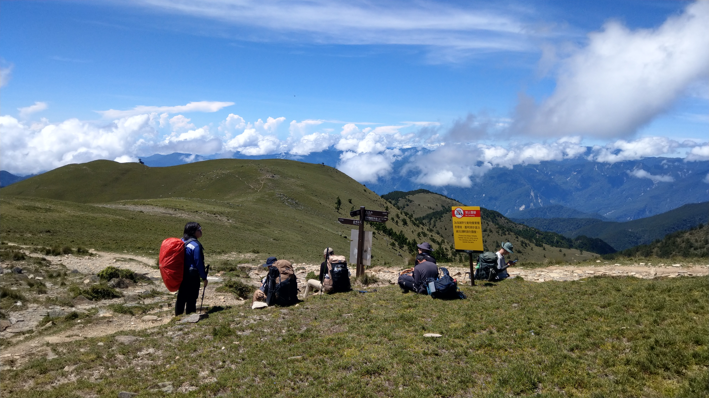
因為有訊號，大家都在報平安，但我沒有想要聯繫的人，也沒有人知道我在山上，我也不想回訊息或者用社交媒體，我就是因為逃避社會才來到山上。
我現在唯一的煩惱是我火車票忘記付錢，然後因為我一直訂票未付款又未取消，所以我線上訂票被停權，而且回台北的火車也沒位置了。
雖然沒訂到票有點焦慮，但轉個頭我就開始看起了火車站附近的民宿，反正大不了就在池上住一個晚上，沒有解決不了的問題，只是要多花一點錢，沒錢才是最大的問題。
11:13 隊伍出發續行
11:33 上到三叉山

在北峰岔路口到嘉明湖避難山屋的路上，有一個山頭，路有點陡，基本上要用爬的。我那時候還以為爬完那個山頭就到了，所以我就一直爬一直爬一直爬⋯⋯爬到後面眼淚都要跑出來了，但我不斷跟自己說「可以慢，但不能停。可以慢，但不能停⋯⋯」。
直到我翻過那座山頭，看到後面還有一個山頭，看來剛剛的眼淚白流了笑死，我擦了擦眼淚鼻涕，認命繼續走。走一走忍不住笑了出來，覺得自己剛剛那麼熱血是在搞笑，但這樣一搞，我的狀態放鬆了不少，再加上後面的路相對好走。
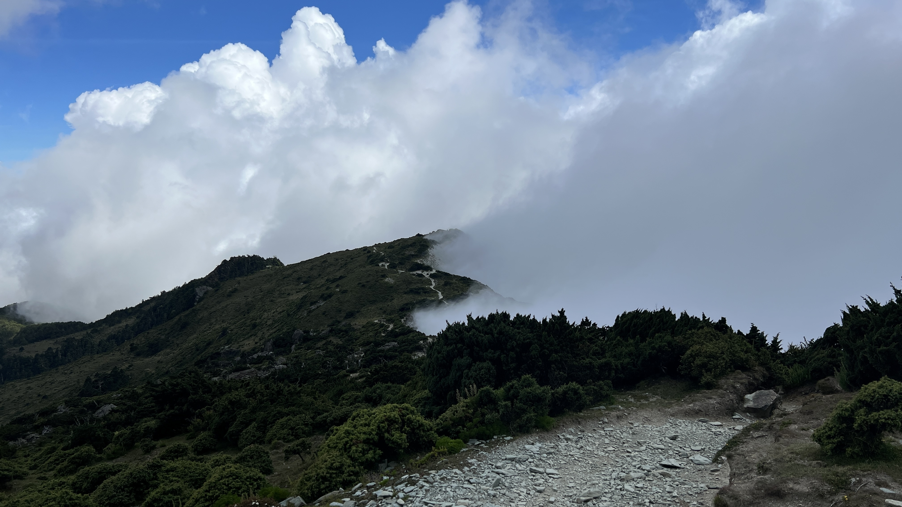
13:35 全隊到嘉明湖避難山屋
14:13 出發續行
在下山的過程中，很明顯感覺到身邊植物的變化。例如說會發現身邊的景物，腳上走的路慢慢從裸岩變成植被，再變成森林、針葉林、闊葉林⋯⋯最後回到平常熟悉的森林會有的模樣。第一次那麼具象化地感受到地理課本上的景象，有種地理課本搬到現實的感覺。
17:09 嘉明湖國家步道

在踢林道的時候，我的身體好像快hold不住了，再加上我意識到這四天要結束，是真的真的要結束了，我要離開了，身體的痛楚再加上心理的EMO，我跟另外一位女生說我好想哭。然後我就哭了，我哭著說我的身體好痛好痛……我的髖骨被包包長時間擠壓得很痛，我的肩膀很痛。
包包理論上會越來越輕，但我現在只覺得包包像一塊巨石一樣壓在我的背上。
我的脛骨很痛，我的小腿很痛，我的膝蓋因為長時間的彎曲磨損而疼痛難忍。我的腳指因為一直下山所以很痛，我的腳後跟因為水泡所以很痛。我的全身都很痛很痛，我的心也很痛很痛……我走每一步都伴隨著全身的痛楚，每一步都很痛很痛……還好當時有隊友在身邊。如果隊友不在，我大概還是會咬牙堅持，只是會走得更痛苦。
17:47 到嘉明湖國家步道入口

最後在隊友的陪伴下堅持了下來，雖然還是很痛，但至少拍照的時候笑得出來。
後面發現到停車的地方還要再走一小段路，不過那麼長的路我都走過來了，那一點路難不倒我，我用登山杖饞扶著自己走到了接駁車的位置。
18:06 坐車下山
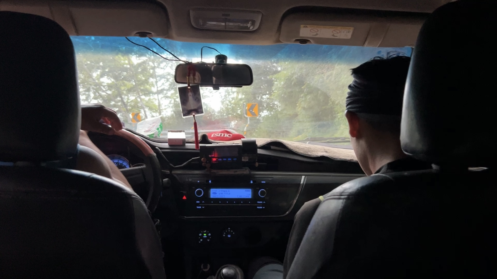
在下山的路上我一直在找人聊天，可能是因為身體很痛也有可能是因為很不捨，我希望有人跟我聊天來分散我的注意力，不然我可能會哭出來笑死。但後來感覺到大家都累所以我也就沒有講話了。
19:44 全員到池上火車站
抵達池上火車站，我順利買到了回台北的票。
後來大家坐上火車，踏上回家的路。在回程的火車上，我幾乎沒有停止哭泣。
四個小時的火車我哭了三個多小時，從坐到位置那一刻開始，我的眼淚止不住地往下流，還好我哭得沒有聲音，不然真的蠻社死。中間還去了幾趟洗手間洗臉，洗完回到位置止繼續哭。
我旁邊坐了一個大哥，那個大哥應該想說這個人在幹嘛，怎麼一直在哭，哭全程。但我很感謝大哥沒有理我，讓我可以一個人靜靜的哭泣。
「活著好累
好痛 全身都好痛
什麼時候才到家
好痛
身體好痛
手指好痛
指甲好痛
被割到的傷口好痛
腳好痛
好痛
腳底好痛
右腳膝蓋好痛 好痛 好痛
好痛
每一個細胞
都在
吶喊
好痛
每一絲肌肉都被撕開重構
好累
活著好累
全身都在發抖
好痛
什麼姿勢坐著都好痛
到底什麼時候才到家
還有三個小時
好累
好想回家
洗個熱水澡
然後躺好幾天」
寫於回程的火車上
這是我當時在火車上邊哭邊寫的文字，當下真的全身都很痛，從來沒有那麼痛過。第一次感受到什麼叫做坐立難安、如坐針氈，真的是怎麼坐怎麼痛。後來痛楚有比較緩解我才有辦法停止哭泣。
回到臺北已經是晚上十二點多，因為沒有大眾運輸所以我只能坐計程車回家。
剛出發的我，充滿活力與希望；而在火車站剛下車的我，因為哭的關係眼鏡腫腫的，整張臉都腫腫的，鼻子因為曬傷而泛紅，頭髮因為四天沒洗頭所以油油地粘在頭皮上，整個人看起來就狼狽不堪。雖然如此，我還是很開心我有來，也很開心認識到大家。
洗澡的時候，水流過曬傷跟划傷的地方會有點刺刺的。洗完澡之後我就直接躺下睡覺了。隔天醒來，身體還是有點痛，長水泡的地方也還是很痛，所以走路的姿勢一拐一拐，但跟昨天相比疼痛緩解了不少。
【後記】
我覺得我爬的第一座山很大機會奠定了我對山的認知。因為第一座山爬的是嘉明湖世新谷，以致於我很長一段時間裏都以為山都是長這樣，都是長得那麼漂亮、那麼美，風景都是那麼好，天氣都是那麼好⋯⋯以致於當我帶著這樣的印象再去爬山的時候，就會有一個落差。只能說目前為止還沒有山可以超越世新谷，大概率也不會有。畢竟這個時間地點人事物的世新谷有且只有一次。嘉明湖世新谷是我登山啟蒙的地方。我相信也希望我會繼續走下去。
一年後的今天，這一篇才算真正地寫完。在寫的過程中，我重新回去看當時的照片，回想當時的心情、狀態，就很像再重新經歷這四天一樣。如同一年前的今天一樣，我再次地離開這座充滿回憶的山。即便如此，山帶給我的東西永遠都不會消失，我會永遠帶著它繼續走下去。
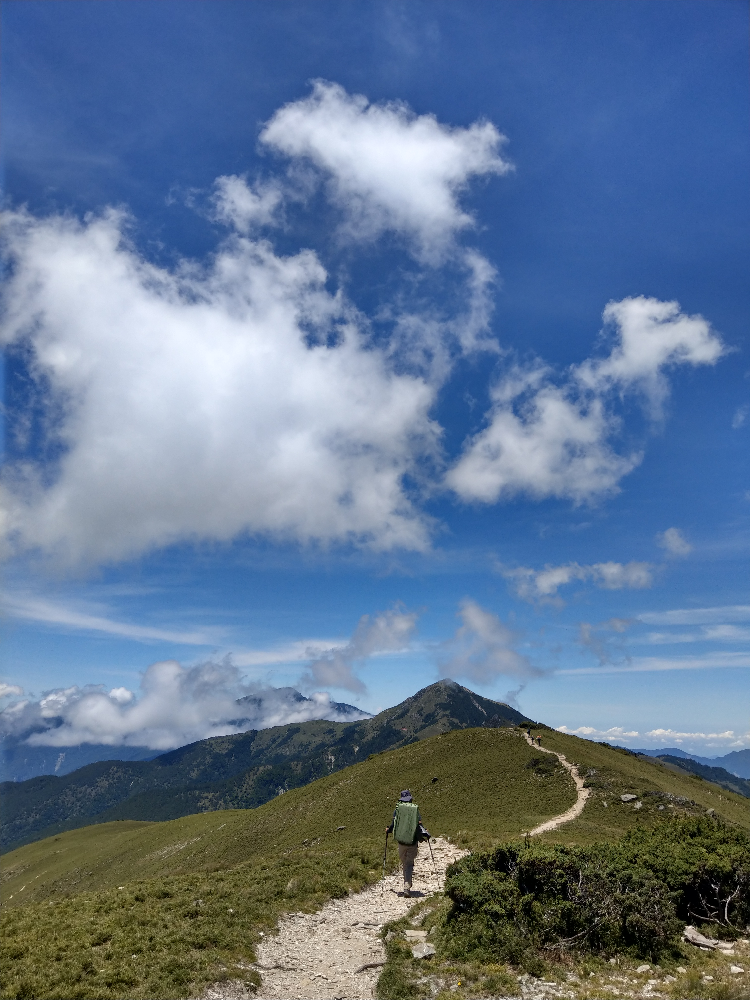
寫於2025年07月13日
【關於行程】
| 日期 | 預定行程 | 實際行程 |
|---|---|---|
| D1 |
<總行進9hr；↑1268m ↓302m；9.01km> 0500 C0 ⇒ 0630 戒茂斯登山口 (H1900m) → 0720 戒茂斯前鋒 → 0920 戒茂斯叉 往返20 戒茂斯山 → 1050 新武呂溪 W1 午餐30 → 1450 足球場營地 → 1530 高爾夫球場營地 (H2890m) C1 |
<總行進9hr；↑1268m ↓302m；9.01km> 0507 C0 ⇒ 0634 戒茂斯登山口 (H1900m) → 0708 戒茂斯前鋒 → 0850 戒茂斯叉 往返20 戒茂斯山 → 1011 新武呂溪 W1 午餐30 → 1534 足球場營地 → 1610 高爾夫球場營地 (H2890m) C1 |
| D2 |
<總行進11hr50；↑789m ↓821m；11.22km> 0530 C1 → 0810 嘉明湖妹池 → 1020 嘉明湖 停20 → 1100 新嘉四叉 → 1140 南二叉 午餐30 → 1410 拉庫音溪山屋 → 1540 雙溪匯流口 → 1640 世新谷 (H2823m) W2 = C2 往返40 大鵬飛機殘骸 |
<總行進8hr30；↑743m ↓918m；8.6km> 0510 高爾夫球場營地 C1 → 0645 嘉明湖妹池 → 0917 嘉明湖 停20 → 1340 拉庫音溪山屋 C2 |
| D3 |
<總行進7hr50；↑584m ↓298m；8.07km> 0530 C2 → 0650 大分富士山東營地 → 0830 清華谷叉 → 0930 飛機殘骸 → 0950 看天池營地 → 1150 飛機新康叉 午餐30 → 1320 布新叉 → 1340 布新營地 (H3110m) W3 = C3 |
<總行進10hr20；↑541m ↓349m；6.1km> 0549 拉庫音溪山屋 C2 → 0823 世新谷 (H2823m) → 1229 清華谷 → 1610 飛機殘骸大草原 C3 |
| D4 |
<總行進11hr；↑553m ↓1523m；16.39km> 0500 C3 → 0520 布新叉 → 0640 南二叉 → 0710 新嘉四叉 → 0730 三叉山 停20 → 0950 嘉明湖避難山屋 W4 → 1430 向陽山屋 → 1600 向陽派出所 ⇒ 1800 池上火車站 |
<總行進14hr；↑1094m ↓1688m；18km> 0550 飛機殘骸大草原 C3 → 0800 機槍陣地 → 0927 南二叉 → 1039 嘉明湖-三叉山岔路口 → 1133 三叉山 → 1335 嘉明湖避難山屋 W4 → 1645 向陽山屋 → 1818 向陽派出所 ⇒ 1944 池上火車站 |
綠色：預定行程；橘色：實際行程

【關於裝備】
| 分類 | 項目 | 內容/品牌 | 淨重g | 數量 | 短評 |
|---|---|---|---|---|---|
| 背負系統 Pack | 登山包 | Decathlon 50L 登山健行背包 | 1390 | 1 | 還行，接近爆滿狀態。可能因為新買所以還算好背，後來發現骨架整根已經歪掉。 |
| 防水套 | 50-60L | 65 | 1 | 在這次的情況下，這個大小的背包套完全沒有辦法包住整個背包，只能意思意思的包一下睡墊，以免刮到。 | |
| 香菇袋 | 75*120 | 114 | 1 | 厚實好用不容易破。因為防水是全部東西一起做，比較麻煩的點是每次拿睡袋都要重新收包包。 | |
| 攻頂包 | Decathlon 10L 登山健行防潑水輕量可折疊背包 | 45 | 1 | 攻頂包沒收好，應該是在翻東西的時候用不見了。雖然沒有很貴，只是東西不見要重新買讓我覺得有點浪費錢。 | |
| 睡眠系統 Sleep System | 睡袋 | 公館森林800g羽絨睡袋 | 1500 | 1 | 暖但重，而且有點塞不進大背，沒有辦法平躺。 |
| 睡墊 | 單人登山健行摺疊泡棉睡墊 (蛋殼睡墊) | 480 | 1 | 買大背的時候沒有想到固定的問題，想說理論上登山包應該都有辦法固定吧⋯⋯結果還真的沒辦法固定。買來的背包沒附底帶，底帶要另外買，所以不能把睡墊固定帶包包底部。想說把睡墊綁在頂袋上面（有彈力繩），但覺得這樣綁整個包包太寬，怕會一直勾到樹枝。後來把頂袋的彈力繩拆掉，裝在了背面，然後裝睡墊對半綁在整個包包的背面。唯一的問題是彈力繩不夠長，沒有辦法雙重固定，只有固定一層，雖然我將彈力繩拉到超緊，但還是有點不穩（雖然走了那麼多天都沒掉過啦） | |
| 炊煮系統 Cooking System | 瓦斯 | 384 | 1 | ||
| 1L水袋 | Topland | 33+20 | 1 | 固定問題：想像中可以把水袋固定在肩帶，但原廠的大背並沒有附贈這個功能。想說可以放旁邊背包兩旁的袋子，但在裝滿東西的情況下，那兩個網袋形同虛設，根本沒有辦法塞任何東西進去。後來有試過用背包兩邊的織帶來固定背包，但因為固定點只有一個，所以還是會很容易掉。再後來將水袋固定在胸帶扣旁的鬆緊帶，缺點是會一直晃來晃去，水很多的時候很難塞，水很少的時候會固定不住 | |
| 2L濾水器水袋 | Topland | 94 | 1 | 裝滿水之後鼓得像顆球，完全沒有辦法塞進背包設計來裝水袋的地方。如果要按照合適承重的話，就必須把所有東西拿出來重收。這樣想想就會覺得幹我為什麼不買可吸式水袋。 | |
| 濾嘴 | Topland | 46 | 後來發現Topland整套下來其實沒有比KATADYN Befree便宜很多。如果再買一次的話可能會考慮買KATADYN。不知道濾了有沒有比較好，但就濾個心安。出水速度還行，但換裝水袋的時候需要有人幫忙。 | ||
| 爐頭 | 火楓 | 87 | 1 | 淘寶很便宜，台灣貴了兩百塊。 | |
| EPIgas BP鈦鍋 | 0.9L | 179 | 1 | 只能說好用 | |
| 鈦杯 | keith | 45 | 1 | 好用+1 | |
| 叉勺 | 17 | 1 | 其實叉勺分開會比較方便，但叉勺一體比較輕。缺點是不能同時用湯匙跟叉子，但其實也還好，不太會有要同時用這兩個東西的時候，而且叉子有設計弧度，可以充當湯匙使用 | ||
| 行進衣物 Cloth Worn | 運動內褲 | Decathlon女款透氣無縫跑步內褲 | 20 | 1 | |
| 運動內衣 | Decathlon女款美麗諾羊毛運動內衣 | 92 | 1 | 沒有很喜歡掛脖設計，但可能掛脖可以避免背包跟內衣肩帶長時間磨擦造成的不適感。 | |
| 內層排汗衣 | Decathlon女款登山健行美麗諾羊毛口袋短袖上衣 | 100 | 1 | 四天大爆汗都沒臭，羊毛讚。 | |
| 登山褲 | Decathlon女款登山健行透氣直筒長褲 | 214 | 1 | 有口袋很方便，透氣好穿 | |
| 登山帽 | Decathlon登山健行高機能防水透氣遮陽帽 | 60 | 1 | 遮陽必備，高海拔有差。 | |
| 登山襪 | Decathlon成人款高筒美麗諾羊毛登山襪 (2雙入) | 50 | 1 | ||
| 登山鞋 | Decathlon女款緩震防水中筒健行登山鞋 (VIBRAM® 鞋底) | 1080 | 1 | 第一天就直接磨腳磨到爛掉，登山請不要穿新鞋 | |
| 登山杖 | 公館森林 | 2 | 好用，陡上/陡下蠻需要，但緩坡的時候會覺得兩根登山杖有點礙事 | ||
| 護膝 | 公館森林 | 1 | 沒用到，白白背了那麼多天。不習慣用護膝，還有就是懶得拿出來。但後來覺得如果第四天下山有用護膝，我可能就不會痛成那樣。 | ||
| 快乾頭巾 | Decathlon美麗諾羊毛頭帶 - 卡其色 | 18 | 1 | 沒有一天是乾的，每天都大爆汗，但沒有臭所以很棒。用久了彈力好像沒那麼好 | |
| 快乾頭巾 | Decathlon多功能圓筒頭巾TREK 100 - 灰色 | 34 | 1 | 沒怎麼在用，直到後來發現鼻子快曬傷了，所以又拿出來用了。遮陽讚，只是我不喜歡有東西蓋住口鼻的感覺。 | |
| 冰袖 | 35 | 1 | 高海拔物理防曬必備。可惜袖套跟衣服之間有一截皮膚沒有蓋住，然後那一截皮膚就曬傷了，而且到現在都還沒有白回去。 | ||
| 攜帶衣物 Cloth Packed | 備用衣物 | 320 | 1 | 基本上都不會用到，我沒在換衣服的，但就帶著備用 | |
| 備用襪子 | 50 | 1 | 必備，中間襪子濕掉有換掉 | ||
| 中層保暖衣 | Decathlon女款雪地健行刷毛保暖半拉鍊上衣 | 215 | 1 | 基本上夠用 | |
| 防水防風外套 | Decathlon男款登山健行 15000mm 防水防風外套 | 450 | 1 | 沒下雨，保暖來講夠用 | |
| 雨褲 | 337 | 1 | 沒下雨 | ||
| 手套 | 3M | 35 | 1 | 有用。防曬以及當我不想要直接碰到東西、又或者在過灌木叢時 | |
| 毛帽 | 123 | 1 | 低氣溫必備，頭部保暖很重要，不然會頭痛 | ||
| 發熱衣 | 94 | 1 | 第三天晚上有用到，因為那天晚上的營地實在是太冷了 | ||
| 照明/電子 Electronics | 頭燈 | 28 | 1 | 必備 | |
| 行動電源 | 20000mAh | 235 | 1 | 充了50%左右，我也不太記得了，拿來充手機為主，但我也沒怎麼在用手機，因為沒有訊號，只是拍照錄影什麼的需要用到 | |
| 行動電源 | 1 | 沒用到，手機本來就沒怎麼在用，不太耗電 | |||
| 手機 | 241 | 1 | 拍照錄影用 | ||
| lighting充電線 | 24 | 1 | 充手機用 | ||
| microUSB充電線 | 10 | 1 | 充頭燈用，但實際上沒有用到。除非我要常開，不然頭燈充滿一次應該夠用三個晚上 | ||
| 其他 Others | 打火機 | 15 | 1 | 煮食必備，且要用打火石式的打火機，因為防風式的在高海拔地區會失靈 | |
| 牙線棒 | 18 | 沒用到，某程度上來說本來也沒有用牙線的習慣 | |||
| 鹽 | 沒用到，但還是可以帶著 | ||||
| 護唇膏 | 10 | 高海拔地區會很乾，可以先備著。前兩天都覺得還好，第四天就開始覺得有點乾 | |||
| 面霜 | 或潤膚乳。同上，高海拔地區會很乾，可以先備著，皮膚太乾會更容易受傷 | ||||
| 護墊 | 多天行程會用到 | ||||
| 哨子 | 4 | 1 | |||
| 垃圾袋 | 1 | 一樣是用食物剩下的保鮮袋 | |||
| 衛生紙 | 1 | 必備 | |||
| 濕紙巾 | 1 | 必備，擦手/身體，那時候也有拿來擦碗。 | |||
| 牙刷 | 1 | ||||
| 健保卡 | 5 | 1 | 必備 | ||
| 現金 | 1 | ||||
| 身份證 | 5 | 1 | |||
| 信用卡 | 5 | 1 | |||
| 鑰匙 | 17 | 1 | |||
| 拖鞋 | 218 | 1 | 直接用束帶束在包包上，缺點是包包會被拖鞋弄髒 |
【關於食物】
| 分類 | 內容 | 細項 | 淨量g | 數量 | 總重g | 短評 |
|---|---|---|---|---|---|---|
| 食物food | 水 | 2000 | 1 | 2000 | 生命之源 | |
| 正餐 | 出前一丁 | 400 | 1 | 400 | 正餐的份量都有吃完。其實沒有很愛吃，但想說很久沒吃了，可以來吃一下，但三天感覺是極限。只能說沒有不行，但沒有很快樂。發現我好像沒有很愛吃泡麵 | |
| 新東陽蜜汁豬肉乾 | 100 | 2 | 200 | 吃了大概2/3吧。必備，生命之源*2. 在山上吃到肉乾真的很爽，特別是在沒有辦法吃到肉的地方，肉乾真的很頂。但下次同樣的行程感覺只要帶一包就夠，兩包有點太多。 | ||
| 阿華田 | 80 | 1 | 80 | 晚上冷的時候喝一杯很爽。早上會拿來配咖啡，但有一天早上咖啡好像加太多了，想說為什麼我要一大早吃苦笑死，而且咖啡好像不喝也沒差 | ||
| 高麗菜乾 | 30 | 1 | 30 | 帶太多，或者說煮的時候沒有分配好，前面兩天煮太少，最後一天吃不完。口味沒差，只是拿來補充一下蔬菜 | ||
| 南瓜濃湯 | 57.6 | 1 | 57.6 | 還行，沒必要的話應該不會再帶，又或者不會在固定的菜單裏，可能是額外補充 | ||
| 蛋 | 180 | 1 | 180 | 很好補充營養的食物，但蛋盒太爛，再加上沒有打包好，第三天發現有一顆蛋破掉。感覺之後可以嘗試用寶特瓶裝。 | ||
| 芋香西米露 | 30 | 1 | 30 | 還行，沒有到很好吃，可以不用再帶 | ||
| 黑糖薑母茶 | 20.2 | 1 | 20.2 | 上帝的恩典，黑糖跟薑味夠重，晚上冷的時候喝上一杯爽爛 | ||
| 早餐 | 白醬雞肉濃湯燕麥 | 141 | 1 | 141 | 吃了三天的早餐。後來在平地時聞到那個味道就想吐。看來我無法每天吃一樣的，也有可能我不喜歡這個味道。沒什麼事應我不會再買，家裏甚至還有一包，完全不想吃。 | |
| 咖啡 | 30 | 1 | 30 | 不喝咖啡好像也不會怎樣，爬山已經夠苦，為什麼還要再吃苦 | ||
| 行動糧 | 能量果凍 | 360 | 1 | 360 | 好像有喝完，補充能量的部分沒什麼特別想法，好像沒有也可以。但這次路線偏缺水，以補充水份來說蠻不錯，只是這樣我為什麼不直接喝水 | |
| 咖啡因能量棒 | 27 | 2 | 54 | 在山上的時候，吃了一口，不好吃，然後就沒有再吃。後來在平地想說再給它一次機會，嗯⋯⋯絕對不會再買了。 | ||
| 天然谷燕麥棒(蜂蜜) | 210 | 1 | 210 | 消化餅的朋友，在山上沒怎麼在吃，除非沒有東西可以吃，有點太乾/太噎。但後來下山有吃完，可能在家沒有東西吃。而且在山下覺得沒有那麼難吃。 | ||
| 天然谷燕麥棒(蔓越莓) | 210 | 1 | 210 | 比蜂蜜味好吃一點點，因為有莓果的關係，但現在還是剩一包在家，不想吃笑死。除非沒有其他選擇，不然應該不會想要吃這個 | ||
| 堅果/果乾(起司) | 120 | 1 | 120 | 很好吃，但也很貴。起司＞腰果＞核桃。起司鹹鹹的很爽。唯一的問題是我為了方便攜帶，將兩包堅果混在一起。然後就變超難吃。我基本上都只是裏面起司的那一包，另一包除了特定堅果之外，其他都沒怎麼在吃。然後就發現自己其實只喜歡吃特定某些堅果/果乾。喜愛程度：夏威果＞腰果=杏仁＞核桃；蔓越莓/草莓＞提子乾＞枸杞乾（但其實後面兩者我幾乎不會吃）。果乾的部分，芒果/蘋果/鳳梨/檸檬/柳丁/芭樂那些我都愛吃。感覺下次可以不用買綜合堅果，因為綜合裏面實際上我不愛吃的東西太多了。 | ||
| 堅果/果乾(熱帶) | 155 | 1 | 155 | 夏威夷果＞杏仁＞核桃＞蔓越莓乾＞芒果乾＝鳳梨乾＞木瓜乾。木瓜乾是什麼地獄的食物。然後這裏面的芒果乾不知道為什麼特別難吃，不會再買綜合堅果了 | ||
| SOYJOY巧克力 | 30 | 2 | 60 | 一開始對巧克力的期待最高，還買了兩包。在平地吃覺得很好吃，但在山上吃覺得有點乾。 | ||
| SOYJOY草莓 | 30 | 1 | 30 | 也不錯吃，但藍莓最頂 | ||
| SOYJOY藍莓 | 30 | 1 | 30 | 藍莓＞草莓＞巧克力。藍莓意外的在山上比巧克力好吃，比較濕潤一點，像鳳梨酥一樣。 | ||
| Kid-O奶油 | 136 | 1 | 136 | 吃完了，有內餡的餅乾像神一樣。可以中和餅乾太噎的部分。 | ||
| 鹽糖 | 24 | 1 | 24 | 理論上是最常吃的東西，然而我做了一個錯誤的決定，我把鹽糖也跟堅果放在一起了，然後就變得超噁心。 | ||
| 77%巧克力 | 205.2 | 1 | 205.2 | 有點苦，一開始吃這個比較多，但後來都吃三角巧克力。然後一樣也是帶太多吃不完 | ||
| 三角巧克力 | 160 | 1 | 160 | 夠甜，但有時候會覺得這兩個的獨立包裝有點太多，要是少一半就完美了，剛好一口吃完 | ||
| 午餐 | 梳打餅 | 140 | 1 | 140 | 本來想要用餅乾配鮪魚醬作為午餐，因為想說中午時間不夠不適合開火，後來覺得我就吃行動糧就好了。沒必要為了爬山特地安排一些平常根本不會吃的食物。下山後有努力把餅乾跟鮪魚醬吃完 | |
| 鮪魚醬 | 200 | 1 | 200 | 還行，但大概率不會再買。跟上面的結論一樣，沒有必要為了爬山而安排一些平常根本不會吃的食物 | ||
| 預備糧 | 出前一丁 | 100 | 1 | 100 | 沒用到 | |
| 濃湯燕麥 | 47 | 2 | 94 | |||
| 天然谷燕麥棒 | 42 | 2 | 84 |